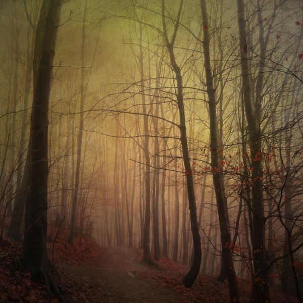

Хэнк Стэмпер: Дивный Новый Мир

Жанр: Фантастика, проза (рассказ)
О произведении: Автор поделился своей очередной фантазией, наполнив рассказ описаниями постапокалиптического мира и картинами из жизни главной героини. ({tip Причина ограничения::Милый воздушный рассказик ^^}16+{/tip})
1
Я медленно шла по полу капитанской каюты воздухоплавающей платформы, разглядывая гигантский мертвый город, который простирался пред моим взором, сквозь широкое толстое стекло. Меня преполняли, мягко говоря, странные эмоции: глубокая скорбь и восхищение, непонятное благоговение. Стеклянная панель заменяла целую стену, так что я могла полностью впитать всю чудовищную энергетику, которой сочился бетонный мертвец. Мои правильные черты лица были едва различимы в неровном свете лампы, горящей в автономном режиме, а шатеновые волосы казались совсем темными, как и глаза, которые из серых превратились в черные блестящие огоньки.
Да, я капитан этого корабля, он дело всей моей жизни. Этой ночью мне не спалось, поэтому я решила пройтись. Ночь уже кончалась, что позволило мне наблюдать сие зрелище в очень таинственных и пугающих тонах. Покинутые облезшие здания с темными манящими зевами окон, давно оставшихся без стекол. Бесчисленное количество небольших остовов, бывших когда-то машинами, на потрескавшемся асфальте. Я почти ощущала свежесть предрассветного часа, когда рассматривала потемневшие от сырости стены домов. Сейчас было самое подходящее время для того, чтобы усесться в кресло и наблюдать эту зловещую картину, предаваясь мыслям о том, какой жизнь была раньше, до ядерной войны, со времени окончания которой прошло три года. Но меня ждали дела.
Многое изменилось с тех пор. Теперь мы — жалкая кучка людей, оставшихся от многомиллионного населения Земли, ограниченные пространством платформы. Нас не так много — численность населения не превышает тысячу человек. Я, как владелец и создатель платформы, поспешила спасти своих знакомых и разрешила взять с собой каждому не более пяти человек, которые, в свою очередь, могли взять еще по два человека. Семейные пары с детьми были поселены в маленькие подобия квартир, а одинокие люди в возрасте, превышающем пятнадцать лет, получили по комнате размером 3*2*2,5, в которой есть только кровать, небольшой шкаф, встроенный в стену и маленькая тумбочка. Но ничего, люди привыкли. Человек — такое существо, которое к любым условиям привыкает, лишь бы выжить. Вот и мы приспособились.
Едят все в общей столовой, которая оснащена пищевыми автоматами, способными генерировать продукты, таким образом освободив жителей от необходимости добычи продовольствия. Столовая — большое просторное помещение, стены в котором окрашены в светло-голубой цвет. В свободное время люди проводят время здесь за чтением, так как огромная библиотека, в которой хранятся все труды, накопленные людьми за все время существования человечества, находится в соседнем секторе. Параллельно стенам стоят пять дубовых столов, у которых находятся мягкие удобные синие стулья. Здесь всегла светло: в этом зале прозрачный потолок и окна практически во всю стену. Сейчас в столовой горят лампы автономного освещения, которые отключатся сразу после наступления светлого времени суток, которого я и дожидалась.
На сегодня у меня была запланирована вылазка в город, так как платформа нуждалась в компьютерных технологиях, которые можно было достать лишь в прежней обители человека. Поэтому мы прилетели в Москву и платформа так низко опустилась. Я думала о том, кого взять себе в напарники, так как в пустом городе одной будет нелегко. Нужен кто-то сильный и опытный, человек, хорошо знающий Москву, тот, кто сможет отразить атаку разгулявшегося зверья, которого в заброшенных городах — пруд пруди. Чаще всего встречаются бывшие когда-то собаками монстры, теперь облысевшие и изрядно потасканные жизнью без хозяев. Собаки мелких пород сразу сдохли, или были съедены, а более крупные представители собачьего рода смогли побороться за жизнь и показать, чего они стоят. Также можно встретить тех, кого раньше называли кошками. Теперь это поганые больные падальщики, которые шастают по городу в поисках мертвых существ, обычно подъедая за собаками, хотя те редко что-то оставляют. Птицы исчезли совсем, мы ни в одном городе не видели пернатых. Только противные лысые млекопитающие, не успевшие еще под действием радиации обрести новую форму, мутировать.
Мой выбор пал на АтлАса — моего давнего знакомого, который обладал тем рядом необходимых качеств, которые не помешали бы селектору.
Селектор — так прозвали людей, выбирающихся наружу и занимающихся добычей необходимых пердметов для нужд платформы. АтлАс, как и я, был одним из их числа. Это молодой парень с русыми непослушными волосами и синими глазами, обладатель прямого носа и интеллигентных черт лица. Он очень общителен, в отличие от меня, но тем не менее у нас предостаточно общих интересов. Мы всегда находим общий язык, но даже молчание не бывает неловким. Для всех он - остроумный, вечно отпускающий шутки, несерьезный парень, но я знала, что на самом деле это интересный собеседник с тонкой душой и своеобразным взглядом на мир и, кроме того, любящий пофилософствовать. Если уж мы говорили — то либо ни о чем, либо обо всем. Многие удивлялись, почему мы ладим, видя наши различия, но мало кто догадывался, что мы настолько же разные, насколько одинаковые.
За моими размышлениями меня застал восход солнца, которое пробивалось сквозь жуткие пустые сооружения, иногда появляясь в оконных проемах. Поднялся ветер, и мусор стал кружиться по пустынным улицам, залетая в здания сквозь распахнутые двери, ведомый сквозняком, который гуляет вот уже несколько лет по городским постройкам. Солнце поднялось слишком высоко, ослепив меня на мгновение и окончательно разогнав утреннюю дымку, повисшую над городом, выставив напоказ все уродства, которые скрывала ночь. Во многих местах улицы виднелись завалы, а кое-где до сих пор находились чьи-то останки, практически истлевшие, до которых не добрались падальщики или отказались по какой-то причине их есть.
А небо голубое-голубое. Как будто мертвый город, представший предо мною, был какой-то шуткой, обманом, ошибкой. Вот-вот послышится людской гомон, зашумят автомобили, раздастся птичий щебет и город оживет. Но нет. Я опять перевела взгляд на бетонный скелет, в котором отсутствовали всякие признаки жизни и отошла, дабы не травить душу. Теперь я стояла спиной к этой не очень приятной панораме и осматривала скромное убранство своего кабинета, или капитанской каюты. В конце этого прямоугольного помещения находился небольшой письменный стол, а по бокам от него пульт управления платформой, но основное управление осуществлялось в машинном секторе, здесь я лишь улаживала формальности. За письменным столом находилось черное кожаное кресло, а напротив стул для посетителей. Прямо у входа стоял огромный аквариум с рыбками, за которыми мне нравилось наблюдать. Рядом с ним спал мой любимец, кот Волтер, с которым мы познакомились еще до катастрофы. Он, как и я, любил рассматривать рыбок, только цели у него были иные, как и у всех нормальных котов — сожрать последних, наверное, в мире, моих спиноргов и помацентровых. Кот сладко потянулся и зевнул, оскалив небольшие клыки, какие и положено иметь домашней киське. Он у меня персиково-рыжий зеленоглазый невоспитанный лоботряс, который ничего полезного за всю жизнь не сделал, даже мышь в прошлой жизни не поймал. Волтер вылез из своей коробки и уставился заспанными глазами, во взгляде которых читался укор, на меня. Я лениво встала, поправила свой зеленый пиджак и подошла к стене, на которой были кнопки. Нажав несколько, я стала наблюдать за тем, как миска, стоявшая у моих ног, наполнилась свежим кошачьм кормом. Кот не торопился. Но у меня не было времени уговаривать упрямое животное и я отправилась по делам.
2
Первым делом я пошла в душевой сектор и, освободившись от опостылевшей формы, предалась чудесному теплому душу. Помыв голову, я решила окончательно отогнать сон и включила ледяную воду. Струи как ножом полоснули по спине, благо я убрала голову из под них. Почувствовав, что рассудок, как и тело, чист, я выключила воду. Растирания полотенцем заставили меня ощутить прилив крови к холодной коже и я зажмурилась, мне стало уютно, как в детстве. Немного совладав с собой, я оделась в синие трико и фуфайку, повесила полотенце на плечо и, натянув на ноги берцы, отправилась в свою комнату сквозь нескончаемую паутину коридоров, по пути сдав форму в химчистку.
Спустя некоторое время я уже стояла при всем параде в своей комнате и смотрелась в зеркало. Как будто и не бодрствовала пол ночи, душ смыл все признаки усталости. На мне были все те же синие трико, фуфайка и берцы, только волосы теперь были стянуты в тугой узел на затылке. Закончив с туалетом, я пошла в столовую, чтобы заправиться перед дорогой. Я окинула взглядом комнату, в которой царил полный порядок, включила вентиляцию и захлопнула дверь. Шумно вздохнув, я потопала к источнику аромата готовящейся еды, который становился все отчетливее по мере приближения к столовой.
Когда я вошла в эту огромную залу, здесь пока не было никого из людей, только стоял завтрак, произведенный специальным автоматом. Я уселась за ближайший стол и принялась активно поглощать предложенную пищу: яичницу с беконом, тост с плавленым сыром, яйцо, сваренное вкрутую и стакан свежевыжатого апельсинового сока. За этим занятием меня и застал АтлАс. Он незаметно подкрался и пререпрыгнул через соседний стул, приземлившись рядом со мной. От неожиданности я поперхнулась и он заботливо похлопал меня по спине, но с такой силой, как будто выбивал очень грязную дорожку. Хм, почему вспомнилось, как люди, до катастрофы, выносили половики на улицу и нещадно их выбивали?
-Ты чего? Так и дух испустить можно! - я не обиделась, но мне хотелось услышать извинения.
-Прости уж, не рассчитал. Доброе утро, кстати. Уже насладилась пейзажем? - АтлАс обвел рукой стену, на которой красовались длинные узкие окна. Сквозь них виднелся удручающий пейзаж. При этом он повернулся ко мне в профиль и я задержала взгляд на его ярко-синих глазах, которые осветило солнце. Я видела кажую ресничку и каждый волос на его щеке.
-Да, все утро смотрела. Уже три года прошло, а я все не могу поверить, - я проглотила здоровенный кусок яичницы, - И привыкнуть.
-Я смотрю, ты уже готова к путешествию, - АтлАс улыбнулся и посмотрел мне прямо в глаза. Я тут же отвела взгляд, слегка смутившись. - Хоть прямо сейчас костюм надевай и выходи.
-Да, а ты, видимо, даже не удосужился переодеться, - я оглядела АтлАса с ног до головы, приметив его мускулистое тело, проступающее сквозь шорты и футболку. - И побрейся, а то что люди подумают, когда ты в гости наведаешься, - я ухмыльнулась.
-Ну люди-то вряд ли чего-то будут иметь против, а вот их питомцы... - АтлАс подыграл мне, - Так куда мы отправимся? Как я понял, тебе нужно железо. - Он с удовольствием проглотил тост.
-Да, ты прав. Я думаю, что стоит заглянуть в бывший Институт Кибернетической Медицины, там мы найдем много интересного. В последнее время остро встала проблема модернизации медблока, да и доступ к информации, содержащейся там, неплохо было бы получить. Там, насколько мне известно, находится что-то наподобие внешнего жесткого диска, который нам и нужен. - Я отхлебнула сока.
-Короче, ты с этим разберешься. Я лишь помогу принести это сюда. - АтлАс покончил с завтраком и встал, шумно отодвинув стул и сладко потянувшись. - Я пошел, приму душ и оденусь. Жду тебя на нашем месте.
Нашим местом мы называли уютную гостиную на верхнем уровне, в которой мы часто сидели и говорили. Гостиная — это продолговатая комната, оканчивающаяся лоджией. У правой от входа стены стоял большой мягкий диван, напротив которого располагался встроенный в стену камин. Такое помещение было на каждом уровне, дабы людям было где расслабиться.
Без АтлАса еда поглощалась в разы быстрее, так что уже через пять минут я, сытая и довольная, отправилась получать снаряжение. Для этого нужно было идти в другую часть корабля, но спешить мне было некуда и я, не торопясь, побрела в кладовую, предавшись собственным размышлениям. Я думала о том, что стала относиться к АтлАсу немного иначе, нежели раньше. Теперь я стала обращать внимание на его внешний вид, иногда стала смущаться, не всегда говорить то, о чем думаю. Он был мне дорог еще до катастрофы, а теперь мы совсем сблизились и я не могла представить себе жизни без него. Он — друг, советчик, старший товарищ — каждый день был рядом со мною и я привыкла к его присутствию, но при этом он мне не надоел. За такими мыслями я не заметила, как оказалась у входа в складские помещения. Я приложила палец к идентификатору и, зайдя внутрь, свернула направо подошла к шкафам с костюмами радхимзащиты. Вытащив два — один поменьше, для себя, и один побольше, для АтлАса - я положила их дожидаться меня на стул и пошла к полкам с противогазами. Там я взяла три штуки — один про запас — и четыре запасных фильтра на случай, если понадобится задержаться в городе дольше, чем требуется. Потом я направилась за рюкзаками и, взяв два, кинула в каждый по три суточных сухих пайка, по большому ножу, по две гранаты, посуду и по аптечке. Дальше нужно было идти в оружейный отдел. Там я взяла два «Бердыша», по два магазина к ним и два ПП Томпсона с таким же пулевым запасом. Ах да, еще нужно было взять фонари и батарейки про запас.
Я удостоверилась в том, что взяла все необходимое и, еле переставляя ноги, потащила неподъемную ношу в гостиную, благо тут недалеко. Но ничего, сама напросилась, гордость не позволила попросить помощи. Впереди уже виднелся вход в гостиную, когда меня догнал АтлАс и отобрал вещи. Я с облегчением вздохнула и распрямилась, по привычке смачно хрустнув позвоночником. АтлАс шел рядом довольный и нес это все, как будто и не было у него в руках ничего. Я осторожно кидала взгляды на него, пока мы шли и переговаривались о какой-то будничной ерунде. Он побрился, принял душ и оделся в такой же наряд, какой был у меня, только черный. От него пахло смесью приятного парфюма и свежестью, какая бывает после водных процедур. От этого у меня немного закружилась голова и я поглубже вдохнула воздух, лишь усилив приятное амбре, источаемое АтлАсом. А он шел рядом, как ни в чем не бывало, посмеиваясь и рассуждая о чем-то несущественном. И вот мы наконец пришли в гостиную. Он легко скинул веши на диван и принялся отделять свои от моих. И тут у меня в груди екнуло: я забыла счетчики Гейгера. Естественно, на лице отобразился испуг и я как-то неловко дернулась в направлении двери. Но тут АтлАс с широкой улыбкой извлекает счетчики из кармана и протягивает мне.
-Ну ничего ж себе, какая предусмотрительность, - Я приняла один счетчик из его рук, воспользовавшись иронией в надежде скрыть конфуз. Я наверное покраснела, потому что АтлАс не стал шутить надо мной, просто понимающе промолчав.
Разложив вещи по рюкзакам, мы уселись на диван, чтобы обсудить детали плана. Я расстелила карту Москвы на журнальном столике перед нами.
-Я предлагаю высадиться у станции метро «Калужская», от нее рукой подать до нужного места. - Я провела пальцем от станции до здания, куда мы направлялись.
-Ладно, так и поступим. Я в этом месте нередко бывал, когда все еще было нормально. - АтлАс принялся потрошить костюм радхимзащиты и натягивать на себя.
Я последовала его примеру и уже одевала на ноги чулки, когда АтлАс надел плащ и скреплял его по типу «комбинезон», закрепляя шпеньки крокодильчиками. Он благополучно закончил и стал проверять содержимое рюкзака. В его рюкзаке оказался сухой паек, аптечка, трехлитровая бутылка(помимо фляги, которую было обязательно носить на поясе), ПП, запасной фильтр для противогаза и лишний противогаз, фонарь, посуда и комплект сменного белья, но места все равно осталось немало. Застегнув рюкзак, АтлАс прикрепил «Бердыш» и нож к костюму, распихал по разгрузочным карманам гранаты и магазины к оружию, прикрепил плащ-палатку и спальник к низу рюкзака специальными тесемками и стоял с противогазом и резиновыми перчатками в руке, смотря на меня с довольной ухмылкой. Я выполнила те же манипуляции, что совершил АтлАс, только лишь потратив немного больше времени.
Мы накинули рюкзаки на плечи и отправились на нижний уровень, где имелся выход с платформы. Немного запыхавшись, мы все же достигли его. Здесь уже собрались провожающие, но гражданских было немного, так как то, что мы выходим, не предавалось общей огласке. Я подошла к маме и крестной, которые с тревогой и пониманием смотрели на меня. Мама — не очень высокая женщина средних лет с голубыми глазами и короткими светлыми волосами, обняла меня и поцеловала в щеку. Потом меня обняла крестная, сестра отца, которая была ниже мамы и, в противоположность ей, с темными длинными волосами и карими глазами. Она, не выдержав, заплакала. Я ободряюще похлопала ее по спине и произнесла:
-Да что вы меня как будто в последний путь отправляете? Мы вернемся максимум через три дня, обещаю. Ничего страшного не случится. - Я посмотрела на АтлАса, который прощался со своими родственниками, но более сдержанно.
Он покосился на меня и кивнул. Мы еще раз обнялись с семьями и, подойдя друг к другу, смотрели как близкие удаляются, так как идти дальше с нами им было не позволено. Нас встретил озорной парень примерно моего возраста и пригласил пройти в соседнее помещение, где проводится дезинфекция прибывших и откуда отправляются наружу. Мы зашли и молча натянули противогазы и надели перчатки. Герметичные двери закрылись за нами, оставив парня управлять процессом. После этого мы прошли сквозь распахнувшиеся двери второго уровня и оказались в неком подобии лифта, который тут же стал стремительно спускаться вниз, унося нас от безопасности, прямиком в ничто.
3
Двери лифта распахнулись и мы в первые несколько секунд не могли ничего рассмотреть от застилавшего и так порядком вспотевшие стекла противогазов дыма. Когда он рассеился, пред нами предстало жуткое зрелище: в лучах чудесного весеннего солнца, которым я так любила наслаждаться в прошлой жизни, купались теперь отнюдь не прекрасные пейзажи, а уничтоженный жутким пожарищем город, бывший когда-то сумасшедше красивым. Я посмотрела наверх: там красовалась наша платформа, нависая черным облаком не над одним кварталом. Теперь, когда мы стояли на растрескавшемся асфальте, усыпанном стеклами и неизвестного происхождения обломками вперемешку с чьими-то останками, душу гораздо больше щемило от картины забытого всеми города, так как в памяти все еще были свежи воспоминания о временах, когда здесь можно было жить. Мы с АтлАсом побрели вдоль практически нетронутых временем, но без признаков жизни зданий. Я пинала мусор, встретившийся на дороге в разные стороны, а мой спутник просто шел рядом с опущенной головой. У меня в левой руке была карта, с которой я постоянно сверялась, а в правой «Бердыш», так как от нежелательной встречи с теперешними обитателями города-мертвеца не был застрахован никто, даже такие опытные селекторы, каковыми мы с АтлАсом являлись. Я не знала в чем дело, но настроение постепенно ухудшалось, так как на меня давило зрелище нежилых полуразрушенных зданий и тишина. Тишина. Теперь я поняла, что меня так волновало. Кроме шарканья наших ног здесь не было слышно ни единого звука. Я была раздавлена. Не хотелось никаких разговоров, так что мы шли молча, но первым все же решил нарушить пугающую тишину АтлАс:
-Ты сожалеешь? - Его голос прозвучал немного глухо из-за противогаза, но это все равно было достаточно громко в этой ситуации, так что звук его голоса словно ударил по ушам.
-Сожалею ли я? Это не моя ошибка. Но если бы была возможность все вернуть, я ею обязательно воспользовалась бы. - Я посмотрела на друга.
-Но такой возможности никогда не предоставится. - АтлАс грустно усмехнулся. - Как только представлю, что погибли практически все, кого я знал, аж дурно становится. С годами понимание этого лишь усиливается, я так сожалею, что не ценил людей так, как это стоило бы делать. Все мы думали о материальных благах, не очень то часто задерживаясь на перкрасном, вечном. Вот и получили это. - АтлАс кивнул на безстекольную многоэтажку.
-Не все понимали, что их последний костюм будет без карманов, а в итоге у многих даже этого костюма не оказалось. - На моем лице блуждала непонятная улыбка, но АтлАс все равно не заметил ее из-за противогаза.
-Главное, что я тоже этого не понимал и выжил только благодаря воле случая, как и все на нашей платформе.
-Ох, сколько осталось недосказанного, недоделанного. Благо, мы имеем возможность прочитать любую книгу и просмотреть любой фильм. Но эта небольшая часть искусства никогда не заменит нам похода в Третьяковскую галерею, путешествия по залам Лувра, изучения Эрмитажа. Все это просто сгинуло в небытие, а если что и осталось, то безнадежно испорчено. - Я подумала о своей мечте побывать в Санкт-Петербурге, погулять по набережным. От мысли о мечте, которой не суждено сбыться, глаза наполнились слезами, но я быстро справилась с наваждением.
-Мы уже никогда не побываем на концертах любимых исполнителей, не получим их афтографа. А я, честно говоря, всегда мечтал отправиться в кругосветное путешествие с кем-нибудь. - АтлАс как-то замялся.
-У нас и сейчас есть такая возможность. - Я зло хохотнула.
-О да, нынешними красотами только любоваться.
-Ну мало ли кто чем любуется. - Настроение заметно поднялось. Мы уже шли и непринужденно болтали о всяких пустяках, как вдруг раздалось какое-то слишком уж громкое утробное ворчание.
Мы кинулись к стене ближайшей кирпичной пятиэтажки и замерли. Я медленно убрала в карман карту и взяла пистолет обеими руками. Атлас сохранял спокойствие и я сквозь стеклышки противогаза видела его решительный взгляд. Он кивнул мне и я, стиснув пистолет покрепче, медленно двинулась к углу здания. Я чувствовала, как по спине скатывается капелька холодного пота, как от моего учащенного дыхания все сильнее запотевает противогаз. Но вот я приблизилась к углу и резко заглянула за него. Никого. Облегченно вздохнув, я повернулась к напарнику и как раз в этот момент с другой стороны на него кинулся огромный лысый пес размером с небольшого медведя и приготовился к прыжку. АтлАс запоздало совершил несколько выстрелов и пес, уже мертвый, рухнул на него, сбив с ног. Я подскочила, спихнула с него тяжелую тушу и помогла встать. Друг был напуган, но вроде бы цел. Дрожащая кисть все еще сжимала дымящийся «Бердыш». Он принялся отряхиваться от радиоактивной пыли. Я тоже дрожала, все еще обеспокоенно поглядывая на АтлАса, чувствуя себя немного виноватой.
Мы перевели взгляд на пса. «Пса». Безобразное лысое тело венчала голова с огромных размеров челюстью, в которой виднелись ряды острых белых зубов. Во лбу зияло три отверстия, из которых сочилась тонкими струйками кровь. Зверь был мертв. Мы постояли еще с минуту, переводя дух, а потом продолжили свой путь, постоянно оглядываясь на жуткое создание. Я заметила, что АтлАс немного прихрамывал, но старался не подавать виду.
-Прости. - Я умоляюще посмотрела на спутника.
-Что ты! Ты не виновата, здесь только моя вина. Я не прикрывал тыл, когда ты подходила к углу, а когда развернулся, он уже несся на меня. - АтлАс ободряюще похлопал меня по плечу.
-Ну он и урод. Я боюсь представить, что вывелось за перделами города, если из безобидных собак получитось такое. - Я поморщилась, но противогаз и сейчас скрыл это от АтлАса.
-Я и не думал, что мутации произойдут через столь короткий промежуток времени. Тут сменилось не более десяти поколений, а эволюция уже началась.
-Да, это весьма странно. Но наука не знает подобных случаев, так что сравнивать не с чем. Может при таких масштабах так и должно быть. Новая среда обитания, вот организм и подстраивается.
-А вот и наше здание! - АтлАс указал рукой с пистолетом на высокое, не очень тронутое катастрофой и временем без ухода, здание.
Я сверилась со схемой и сообщила:
-То, что мне нужно, находится на третьем этаже. Там нужно будет немного поколдовать с оборудованием, но я справлюсь. Тебе же предстоит перенести все то, что я нарою и караулить выход, пока я буду занята приборами.
-Окей, будет сделано.
Когда мы поднимались по ступенькам когда-то известного не только в России, но и за рубежом Института Кибернетической Медицины, солнце уже было в зените и, несмотря на то, что был только лишь конец апреля, ощутимо пекло. Коричневая краска на перилах и самих ступенях облупилась и ее ошметки лежали всюду и, когда мы на них наступали, неприятно хрустели. Стекла на первом этаже были выбиты и поэтому территория вокруг здания была сплошь усыпана осколками. Я и мой спутник подошли к тяжелой железной двери и он потянул ее. Та поддалась не сразу, но когда это произошло, раздался душераздерающий скрип, которым мы, наверное, пробудили всю живность в округе.
-Дамы вперед! - АтлАс жестом пригласил меня внутрь, распахнув предо мной дверь.
-Благодарю, но туда я бы не хотела идти первой. - Я парировала.
-Ну хорошо. - АтлАс отпустил дверь, которую мне не сразу удалось остановить и вошел внутрь, перекрестив руки и держа в правой «Бердыш», а в левой фонарь. В здании царила тьма несмотря на то, что на улице было светло.
Я как можно тише закрыла дверь и, хоть мне это не удалось, последовала примеру напарника и взяла фонарь и пистолет.
-Сначала нужно включить систему аварийного энергоснабжения. - Я направилась в правый конец коридора по плитточному полу, усыпанному прошлогодними листьями и мелкими земляными комьями. - Прикрой меня, я мигом обернусь.
АтлАс замер у стены в том месте, откуда можно было контролировать ситуацию в обеих сторонах коридора и внимательно прислушивался, но кроме моих осторожных шагов ничего подозрительного не услышал. Я тем временем подобралась к электрическому щиту и, найдя нужные выключатели, перевела их на «Вкл». Тот час же в помещении загорелся неровный свет, который иногда моргал, но этого было вполне достаточно. Я пошла обратно к АтлАсу который стоял все там же, но успел визуально изучить помещение. Он кивнул на лестницу, ведущую на верхние этажи и я уверенно зашагала туда, а АтлАс пошел следом.
Лестница особо не пострадала, я бы не сказала, что она заброшена, только вот ее выдавал толстенный слой пыли. Я тихо поднималась по ступенькам и наблюдала за тем, как пыль от моих ног поднимается в воздух маленькими облаками. Мы благополучно миновали пролет второго этажа и поднялись на третий. Здесь было гораздо чище, нежели на первом, по причине целостности стекол. Я сверилась с планом и медленно двинулась в направлении нужного мне кабинета, где я могла взять информационный блок и кое-что из оборудования. АтлАс захромал следом. Он меня немного беспокоил, так как неповоротливо двигался и тяжло дышал.
Я вскоре нашла нужное помещение, у входа в которое висела табличка «Кабинет новейших технологий», и, настороженно заглянув туда, направилась к приборам. Мне предстояло извлечь чипы из всех и позаимствовать некоторые приспособления, которых у нас не было. Я приступила к работе, а АтлАс тяжело осел на пол у выхода, опустив пистолет.
Моя работа не была столь сложной, какой должна была быть. Все оборудование было впорядке и мне не составило труда извлечь все необходиомое, а главное — носитель информации о различных методах лечения болезней с помощью кибернетической медицины, а также информации о строении приборов. Эту вещь я сразу убрала в рюкзак, а остальное подняла и уже было направилась к напарнику, как вдруг раздался сильный грохот и звук беготни наполнил коридор. АтлАс находился в какой-то прострации, так что я влепила ему со всей дури пощечину и, по дороге запихивая в его рюкзак приборы, вытолкала на лестницу. Но на ней уже слышались визги и топот мутантов, которые отрезали путь к отступлению. Выхода не было — пришлось бежать наверх. АтлАс постоянно спотыкался и я пропустила его вперед, постоянно отстреливаясь. В одну тварь я попала и она, отлетев назад, сбила своих сородичей, что дало нам неплохую фору.
Но вот мы добрались до выхода на крышу, который по иронии был заперт. Поэтому АтлАс просто стоял и пялился на закрытую дверь. Я, не растерявшись, прострелила замок и распахнула дверь, выпихнула товарища на крышу и захлопнула ее. АтлАс упал и больше не поднимался. Я подбежала к нему и стала толкать, но он был без сознания. Жутко перепугавшись, я сняла рюкзак и стала измерять радиоактивный фон. Он был низким, так как мы были на крыше пятнадцатиэтажного здания и взывы не происходили неподалеку. Я отстегнула плащ-палатку от рюкзака АтлАса и перекинула ее треть через провод, которых на крыше было предостаточно, а оставшуюся треть постелила на пол. Потом отстегнула его спальник и развернула его, кинув на дно импровизированной палатки.
Закончив, я подошла к АтлАсу и сняла его противогаз, тут же нацепив респиратор. Его волосы прилипли ко лбу, который был весь в поту. Дыхание было неровным, свистящим и прерывистым, но все же было. Дальше я принялась расстегивать костюм и, дойдя до ног, выругалась. Громко. Низ его живота пересекал глубокий порез шириной два сантиметра, который продолжался на бедре, сужаясь, и обрывался, не достигнув колена. Рана сочилась кровью, которая промочила его белье. Аккуратно, стараясь не ухудшить состояние АтлАса, я на его костюме поволокла его к палатке. Когда он оказался у входа, я перетянула его на спальник.
Пулей метнувшись за своим рюкзаком, я по дороге извлекла аптечку и бросилась к АтлАсу. На его теле проступил холодный пот и я сняла с него кофту и трико, насквозь пропитанные его кровью. После этого я вскрыла свою аптечку и идостала перекись водорода, которой тут же воспользовалась, наполнив ею рану до краев. Она запенилась, полилась наружу, но я умело промокала вокруг стерильными салфетками, заодно смывая запекшуюся кровь с его тела. Когда с этим было покончено, я достала бриллиантовую зелень и обработала ею края раны. Ну вот, теперь смотрится не так ужасно. Я вылезла из палатки и тоже сняла противогаз, заменив его респиратором. Но впереди было самое сложное: скрепить края раны. Лейкопластырь не вариант — нам еще домой возвращаться. Оставался один выход: сшивать, а так как мне не приходилось этого делать с людьми, факт необходимости выполнения этих манипуляций меня очень беспокоил. Немного успокоившись, я вернулась в палатку. Руки дрожали, но я все равно разрывала упаковку с хирургическими иглами и нитками. Они были стерильны, так что мне не пришлось из дезинфицировать. Я приблизила руку с иглой к началу полосы на животе у АтлАса и медленно сделала прокол. Он даже не застонал. Это добавило немного уверенности и я проколола рану с другой стороны и завязала узел. А это не так страшно, как казалось. Я аккуратно сделала еще несколько узлов, а потом отвернулась, чтобы перевести дух. В глазах стояли слезы, но я знала: нужно закончить. Я вернулась к неподвижному телу и продолжила операцию. Никогда бы не подумала, что придется делать такое! Но приходилось продолжать, уже на автомате, но все так же аккуратно. Я считала узлы и в итоге их оказалось девятнадцать. Немного отдалясь, я убедилась, что все ровно и нигде нет открытых участков. Довольная, я промазала всю рану зеленкой и часть, которая на животе, заклеила бактерецидным пластырем, а остальное забинтовала.
Теперь предо мной лежал практически обнаженный АтлАс, который наверняка замерзнет, если в таком виде и останется. Поэтому я принесла мой мягкий спальник и, предварительно расстегнув его, укрыла моего друга. Теперь нужно было позаботиться об ужине и я, застегнув поплотнее костюм, пошла вдоль крыши, по пути собирая различные щепки, деревянные обломки и палки. В итоге собралось достаточно топлива для солидного костра, который я решила развести прямо у входа в наше временное жилище.
Свалив в кучу примерно четверть найденной древесины, я пошла в палатку за спичками, где проверила состояние АтлАса, которое было удовлетворительным. Он все еще горел, но по крайней мере высох и продолжал находиться в отключке. Я вытащила свой сухой паек и посуду и пошла с этим к разложенному кострищу. Там я ровно разложила палки, на них положила деревянные обломки, а щепки смешала со всем этим. После достала спички, ранее именуемые «Охотничьи», которые не потухали даже в воде. Ими я достаточно быстро развела огонь. День близился к вечеру, поэтому костер был очень кстати, тем более нужно было вскипятить воду и погреть пищу. Я соорудила из металлической проволоки держатель для сосудов и повесила на него литровую кужку АтлАса с водой, а рядом с костром положила две банки гречневой каши с тушенкой. В этот момент в палатке послышалось копошение и стоны. Я тут же бросилась туда и обнаружила вновь ставшего мокрым и горячим АтлАса. Я скинула свой костюм и подползла к нему. Он бредил, сипел и корчился. Это навело меня на мысль, что рана была инфицированной и сейчас мой спутник находился в довольно плачевном состоянии. Его организм боролся с инфекцией. Я приподняла его голову, влила ему в рот немного прохладной воды из фляги и осторожно села так, что он лежал головой на моем бедре. Я взяла его руку в свою. Она была холодной и мокрой. Он, почувствовав мою руку, сжал ее так, что мне стало больно. Я осторожно потянулась свободной рукой к аптечке и, достав ампулу с антибиотиком, сделала АтлАсу инъекцию в вену. Он совершенно не почувствовал и продолжал лихорадить.
Я достала кусок марли, смочила его и принялась обтирать товарища. Ему становилось лучше, он по крайней мере умолк и немного остыл: укол подействовал. Потом смахнула со лба его неполсушные немного кудрявые волосы и приложила руку ко лбу. Он был нормальной температуры. Я снла его голову с себя и положила, осторожно выползая из палатки. Вода вскипела и я, достав чайные пакетики, заварила крепкого черного чая себе и АтлАсу и отнесла ему. Он уже очнулся и смотрел немного мутным взором на меня, ощупывая при этом свою рану.
-Извини, что не сказал. Не хотел беспокоить по пустякам. - Атлас плохо поддающимися руками принял чай и стал дуть поверх него.
-Понимаю, но я здорово испугалась, когда ты упал. Видимо, когти у той твари были в грязи, вот она и попала тебе в кровь. Я переживала. - Я поближе подползла к АтлАсу и накинула на него свой спальник, так как он раскрылся и сидел в одних плавках. -Не хватало еще, чтобы тебя продуло.
-А как же ты? Иди сюда. - Он гостеприимно откинул спальник и подождав, когда я окажусь рядом, запахнул его. Я чувствовала его тепло, что он живой. Было очень уютно, сидеть вот так с ним и болтать о пустяках. - А ты неплохо меня залатала, спасибо! - Он поставил уже пустую кружку в угол и принялся ощупывать шов.
-Как ты с этим вообще столько прошел? Я бы сразу свалилась. - Я тоже допила чай и спрятала ступни в наше тепло.
-Говорю же, не хотел тебя беспокоить. А я и не сразу заметил. - АтлАс храбрился, но мне было все равно, я его прекрасно понимала. Я почувствовала, что его рука вплотную лежит рядом с моей, но не отдернула, а просто наслаждалась этим ощущением.
-Окажись на твоем месте я, мне бы он точно брюхо вспорол, а ты отделался ранками. Пусть глубокими, но все же ранками. - Я умехнулась, подумав о том, что действительно отделалась бы большей кровью, чем толстокожий АтлАс.
-Ну вот видишь, я тебя, получается, спас! - АтлАс широко улыбнулся. Он попытался засмеяться, но закашлялся, прикрыв рот рукой. Когда он ее снова опустил, она уже лежала на моей. - Хотя, ты меня тоже спасла, о великий хирург! - Мы с АтлАсом посмотрели друг другу в глаза. И тут он очень крепко обнял меня. Я ответила, прижавшись к нему и прикоснулась к его колючей щеке своей. Слезы потекли из глаз, как только меня посетила мысль о том, что я могла его потерять. И теперь мои чувства к нему наконец-таки обрели форму, собрались воедино, стали понятными ему, как и мне.
Мы сидели так минуты две, точно. Мои горячие слезы стекали по лицу прямо на плечо АтлАса, но он и не думал меня отпускать.
-Хорошо, теперь просто посмотри на меня. Не думай о том, что будет через час, что будет через минуту. Сосредоточься только на том, что есть сейчас, хорошо? Есть только ты и я. - Голос его звучал глухо, но я чувсвовала его. Рядом. Я вытерла слезы руками, которые только что лежали на его плотной теплой спине, и на моем лице не осталось и их следа, так как истерики не было.
Я посмотрела на него и утонула в нежном взгляде синих, каким был океан, глаз. Такого я не видела во взгляде ни одного человека. На его губах витала рассеянная улыбка, а все его лицо выражало такую мягкость, что я не выдержала и поцеловала его, дав выход эмоциям, копившимся не один год. АтлАс с готовностью ответил на поцелуй, и эта минута близости показалась нам вечностью. Я чувствовала его рядом, он излучал тепло, живое тепло. Под моими руками было живое тело, которое дышит и дрожит.
Кое-как я оттолкнула от себя АтлАса, потому что уже нечем было дышать. Он сжимал мою руку, а я все также пребывала в его объятиях.
-Я...люблю...тебя. - АтлАс нарушил немного неловкое молчание. - Я не мог признаться ранее, так как видел, что тебя сильно угнетает катастрофа.
-Я всегда думала, что для тебя являюсь просто другом. - Я осторожно держала его руку, моя голова была на его плече.
-А ты и есть друг. Очень хороший друг. Я бы тебя ни на кого не променял. Только теперь ты обязана быть еще и моей девушкой. - АтлАс поцеловал меня в щеку.
-Не обязана, но я не посмею отказаться. - Я дерзко поцеловала его в губы. - Я люблю тебя. Люблю.
АтлАс наградил меня долгим нежным поцелуем в губы и лег на свой спальник. Я последовала его примеру и легла рядом, накрыв нас. Атлас обнял меня и мы лежали так около часа, ни о чем не разговаривая, наслаждаясь обществом друг друга. Мне нравилось ощущать его рядом, слышать его дыхание и чувствовать запах его парфюма. Мы были опустошены, так как все эмоции вышли и осталась приятная нега.
Но есть было нужно и я выползла из под руки задремавшего АтлАса, получше укрыла его, обулась, натянула костюм и респиратор и вышла наружу. Костер почти догорел, но пламя еще присутствовало, поэтому я просто добавила топлива и забрала нагревшуюся кашу, нам на ужин. День близился к вечеру и над разрушенной Москвой горело оранжевое потухающее солнце, окрасившее облака в свой цвет. Я сидела рядом с костром и смотрела на небо, чувствуя умиротворенность. Теперь ничто не сможет испортить мне настроение сегодня. Как только я вспоминала, что между нами произошло, что-то приятно екнуло в области желудка и мне стало легко и свободно. Я подтащила свой рюкзак к краю крыши и села на него. Мозг словно отключился и не позволял грустным мыслям завладеть мною, поэтому сейчас я даже в разрухе и смерти видела красоту, какое-то свое обаяние. Напротив «нашего» дома находился ряд девятиэтажек, в немногих уцелевших окнах которых отражались отблески заходящего солнца. Я подумала, что если бы была художником, то обязательно нарисовала бы это. Все мое существо было пропитано тишиной, окружавшей меня, но где-то в сердце горел непотухаемый огонь.
АтлАс незаметно подкрался ко мне и обнял. Я не испугалась, мне скорее был приятен факт того, что он обнял меня. Он протянул мне вилку и уже немного подостывшую банку с кашей, заботливо открытую. Я с благодарностью приняла ее и стянула респиратор. АтлАс последовал моему примеру и мы теперь вдвоем поглощали вкусную пищу. Как только я поднесла первую вилку ко рту, я почувствовала запах мяса и поняла, насколько была голодна. Я, как и АтлАс, быстро прикончила банку и поша ставить чай, опять воспользовавшись его большой кружкой, после чего вернулась к парню. Он сидел на своем рюкзаке и смотрел на город. Кожа его лица в свете закатного солнца казалась чуть светлее и краснее, чем была на самом деле, волосы развевались из-за внезапного порыва ветра, а глаза были устремлены куда-то вдаль, но нет, того, что он видел, не мог видеть никто. Я стояла сзади него и любовалась им. Как я раньше не замечала, что его однодневная щетина так классно смотрится? Хотя, кого я обманываю. Замечала.
АтлАс увидел меня и повернулся, улыбнувшись. Я подошла и села на свой рюкзак вплотную к нему. Он взял мою руку и безопаснее, чем в этот момент, я себя еще никогда не чувствовала. Даже не смущал тот факт, что мы находимся в центре мертвого города, кишащего агрессивно настроенными отвратительными существами.
-Я бы поцеловал тебя, но на мне респиратор, а с ним тебе вряд ли понравится. - Мы засмеялись.
-Пофигу, снимай респиратор. - Я стащила свой. - Здесь радиационный фон не настолько высок.
АтлАс снял респиратор и жадно впился в мои губы. Я ответила, прижавшись к нему. Он тут же обнял меня и тоже прижал, запустив руку мне в волосы. Я в ответ взъерошила его волосы. Мы остановились, чтобы немного перевести дух. Мы смотрели друг другу в глаза и тонули в них, но не старались спастись.
-Пойдем в палатку, что мы здесь, как бедные родственники? - АтлАс взял меня за руку и повлек к палатке, по дороге расстегивая свой костюм, чем я тоже стала заниматься.
Время перестало для нас существовать, превратившись в вечность, в которой не было места никому, кроме нас.Я ни о чем не беспокоилась, ведь рядом был он. Мысли наши слились воедино, мы были на одной бесконечной волне.
4
Реальность никак не хотела возвращаться. Я лежала на твердом покрытии практически голая, но укрытая чем-то. И тут на меня волной нахлынули воспоминания: зверь, ранивший АтлАса, рана...следующее заставило меня улыбнуться и я поняла, что на мне лежит рука АтлАса. Я осторожно, чтобы не разбудить, повернулась к нему и нежно поцеловала в губы. Он широко улыбнулся, не открывая глаз и, как огромный кот, прижал меня так, что захрустели ребра. Когда он ослабил свою хватку, я выползла, оделась и вышла на улицу. Ночной ветер, очевидно, разбросал ветки по небольшой поверхности вокруг палатки и я, немного ежась от утренней весенней прохлады, принялась собирать их. Они не отсырели и поэтому я с легкостью разожгла снова костер и, слив так и не выпитый вчера чай, поставила на огонь новый. Потом достала из рюкзака рисовую кашу и печенье и поднесла к костру. Кашу я опять поставила поближе к огню, а печенье убрала пока что в карман.
В это время из палатки высунулся немного помятый АтлАс и попросил подойти. Не успела я заглянуть в палатку, как получила поцелуй от него.
-Но я позвал тебя не за этим, как ты понимаешь. Хотя, мне понравилось. - АтлАс улыбнулся.
-Мне тоже. Так чего ты хотел? – Я вопросительно посмотрела на него.
-Эм, у меня разошлась парочка швов на животе. - Он покраснел, после чего указал на живот, где действительно край раны разошелся, но не потому, что узлы развязались, а потому, что кожа надорвалась и нитка попросту выскочила.
-Это ерунда! Подожди. - Я тоже зарделась, после чего покопалась в аптечке и достала обычный лейкопластырь. - Я тебе сейчас тейп наложу. Не переживай.
Я разделила лейкопластырь на несколько тонких полосочек и аккуратно скрепила края раны.
-Спасибо!
-Выходи завтракать. Сразу после отправляемся в обратный путь.
АтлАс выбрался из палатки, вытащив уже два сложенных спальника и принялся сворачивать плащ-палатку. Он с этим довольно быстро управился и присоединился ко мне, сев рядом и взяв банку с кашей. Он отобрал мою и открыл ее, после чего вернул мне. Ели мы в молчании, которое совершенно не смущало. Закончив, я покидала все в свой рюкзак, АтлАс убрал свои вещи в его, после чего пристегнул оба спальника и плащ-палатку к себе. Остались после нас только пустые консерывные банки и обгоревшие уголья. Мы натянули противогазы, у которых поменяли фильтры и перчатки. Потом АтлАс вытащил с улыбкой ПП. Я последовала его примеру.
-Ну что, готова к пробежке? - Он снял свое оружие с предохранителя.
-С тобой — хоть на край света. - Мой предохранитель тоже щелкнул.
АтлАс бросился к двери и распахнул ее. Половина монстров спала, но бодрствующие тут же кинулись на нас. Мой спутник срубил их громкой очередью. Я стояла рядом с ним и убивала спящих. Но их было все равно много. АтлАс достал гранату и зашвырнул ее вниз. Раздался сильный взрыв и послышался собачий визг. Мы побежали и тут на меня сзади бросилась какая-то недобитая шавка, но АтлАс опередил ее, с криками : «Не тронь ее, с*ка!» он накинулся на нее с ножом и обезглавил. Я кивком показала, что нужно продолжать бежать вниз. АтлАс сжал мое предплечье и продолжил спуск. В некоторых местах лестничный пролет был разрушен гранатой, тут АтлАс перепрыгивал сначала сам, а потом брал меня за руку и помогал перебраться. Мы достаточно быстро сбежали вниз и выбрались на улицу. Здесь нас поджилало пять мутантов, которых АтлАс снял с какой-то игривой легкостью, позволив мне расправиться лишь с одним. Сейчас мы не шли, а бежали по той дороге, которая привела нас сюда. К счастью, или к сожалению для АтлАса, который с каким-то животным азартом прошивал туши тварей пулями, нам больше никто не встретился. Мы только завидели платформу вдалеке, как с нее тут же стал спускаться лифт, который простоял на земле не меньше десяти минут, прежде чем мы его достигли. Мы вбежали в него и он захлопнулся, оставляя мертвый город со всеми беспокойствами и опаснастями позади.
Я и АтлАс стянули противогазы и улыбались друг другу, тяжело дыша. Он приблизился ко мне и устало поцеловал в шеку. Тем временем лифт достиг платформы и мы, скинув с облегчением рюкзаки и защитные костюмы, отправились в душ. Я очень устала, поэтому как-то залипла в душе и очень долго мылась. Когда я вышла, меня уже ждал АтлАс с чистым комплектом белья и фирменной широкой улыбкой. Весь свежий и перевязанный в медпункте. К моему удовольствию, нашего медика устроили швы, наложенные мною и он не стал их менять, лишь смазал рану сверху зеленкой и поставил АтлАсу укол против столбняка.
Мы, обнявшись, пошли по длинному коридору в столовую, где все уже обедали. Мы сели в дальний угол за стол и с остервенением стали поглощать суп харчо, который был сегодня на первое и вкуснейший плов. Все это время мы не замечали ни окружающих, ни друг друга. Когда с основными блюдами было покончено, мы поудобнее устроились на мягких стульях и стали пить чай с лимоном и шоколадным печеньем. Рука АтлАса, сидящего справа, оказалась на моем колене, но он сделал вид, будто ничего не происходит.
-Как мы все-таки хорошо управились! - АтлАс обмакнул печеньку в чай и откусил мокрую часть.
-Ты еще не виделся со своими? - Я предпочла сегодня обойтись без печенья и поэтому просто отхлебнула горячего чая. - Будет чего рассказать. И показать. - Я указала на его живот.
-Вообще про это не буду говорить, не люблю, когда меня жалеют. - АтлАс пониже опустил свой серый свитер.
-Я вообще терпеть этого не могу. Потом ходят и смотрят, как на инвалида! - Я поморщилась.
-Вот вот. Не надо меня жалеть, я здоров. - АтлАс нахмурился, но было видно, что он все еще в хорошем расположении духа.
-Ладно, не будем об этом. Я вот думаю: пойти мне сейчас на службу, или завалиться спать? Я не очень то и устала, но отдохнуть хочется. - Я допила свой чай и наблюдала как АтлАс вылавливает из своей кружки печеньку. - Парадоксально, конечно, но кому не хотелось отдохнуть от работы немного больше, чем следует?
-Я думаю, что лучше нам сейчас все же не идти на работу. Пойдем. - АтлАс выпустил меня из-за стола и медленно двинулся вслед за мной.
-Ты хочешь спать? - Я вопросительно посмотрела на АтлАса.
-Нет, но если ты настаиваешь... - АтлАс приобнял меня за талию.
-Я имела в виду, что можно взять планшет и посмотреть фильм! - Удивленно вскинув брови, я уставилась на АтлАса, который немного виновато улыбался. - А там уж как пойдет.
-Тогда я за Властелина Колец! - АтлАс был явно рад моему предложению Обоим предложениям. - Жду тебя в моей комнате. Планшет не приноси, лучше флешку.
-Я как раз скачала режиссерскую версию с отличным переводом? Или ты хочешь посмотреть в оригинале?
-Не, не надо. Родной язык все же приятнее. Да и не осталось уже тех, кто говорит на английском. Еще один мертвый язык, как, впрочем, и все остальные. - АтлАс немного погрустнел. - Я тогда принесу в комнату вкусняшек! Ведь режиссерская версия почти четыре часа идет.
-А я принесу плед. Взять наушники? - Я посмотрела на щурящегося от солнца АтлАса.
-Давай лучше просто так посмотрим.
За разговором мы быстро добрались до жилого сектора и поднялись по винтовой лестнице на последний этаж, после чего я пошла по коридору налево, а АтлАс направо. Моя комната находилась практически в конце, поэтому до нее я шла еще минуты три. Дверь была закрыта и я, приложив палец к специальному индикатору рядом с дверью, стала ждать идентификации. Дверь раскрылась и я вошла. Все та же маленькая комната, кровать, застеленная бежевым покрывалом, небольшая телепанель напротив кровати, тумбочка и «окно», которое было в каждой комнате. Это интерактивное устройство, которое отражало время года и суток на улице и создавало нужную картинку. Я залипла, смотря на то, как птицы летают в голубом небе над зеленым парком. Но я не успела взять флешку: над моей головой завыла сирена, одновременно с загоревшейся тут же оранжевой лампочкой, которая вращалась вокруг своей оси, оповещая об опасности. Это была не учебная тревога, так как я сама их устраиваю. Среагировала я немедленно, прыгнув на пол и достав из под кровати здоровенный армейский зеленый ящик. Открыв его, я извлекла бронежилет, камуфляжную форму, пару световых гранат, респиратор, АК-74(да-да, я храню автомат под кроватью), три рожка к нему, один из которых я не замедлила подсоединить. Пистолет с глушителем тоже не помешал бы, поэтому я достала его и, распихав обоймы по разгрузочным карманам, повесила себе на пояс. Оделась я очень быстро и уже стояла в форме с натянутым поверх нее бронежилетом с автоматом в руках и респиратором на лице.
Я вышибла дверь ногой. В коридоре было темно и через каждые десять метров горели такие же аварийные лампы, как и у меня в комнате, и слышались предупреждающие однообразные сигналы тревоги. Вокруг в панике бегали люди, даже не подумавшие узнать, в чем дело. Я побежала, расталкивая обезумевших товарищей, к капитанскому мостику. Здесь лампы не только вращались, но еще и мигали, что было далеко не нормой. В глазах рябило, но я упрямо бежала. Дверь отворилась после моего прикосновения и мне навстречу бросился Волтер, которого порядочно напугали сирены. И тот, кто стоял сейчас ко мне спиной. Но я сразу поняла, кто это. АтлАс. Он медленно повернулся и я поняла, что с ним что-то не так. Лицо его было покрыто вздувшимися венами, воркруг глаз залегли темные круги, а сами глаза как-будто засели глубже. В уголках рта собралась пена, а лицо исказила гримаса непонятной ярости. Тут его скрутило и он упал на колени, схватившись за голову. АтлАс повалился на бок и в непонятном припадке стал срывать с себя одежду. Мой взор тут же был прикован к его ране на боку, которая стала фиолетовой, разошлась и ее края вывернулись наружу, сочась зеленоватой слизью.
Что за дерьмо? Я попятилась к стене, но слишком быстро достигла ее и вынуждена была наблюдать, как с АтлАсом происходит что-то странное. Страшное. Его кожа темнела и грубела, волосы на голове выпадали. Я бросилась было к нему, но он отшвырнул меня рукой с нечеловеческой силой и я отлетела к стеклянной панели, ударившись головой. Плечо и грудь горели. Я посмотрела туда и увидела три полосы, разодравшие бронежилет и куртку. Что за? АтлАс тем временем стал какого-то сине-серого цвета. Его ноги перестали быть похожими на человеческие: стопа вытянулась и теперь больше походила на ногу собаки. Собаки. Меня осенило. Лысый пес в городе.
-АтлАс! - Я слабым голосом позвала его.
Но, видимо, зря. Зверь повернулся ко мне и стал медленно приближаться. На четырех лапах. Глаза мои застилали слезы, но я подняла автомат и выпустила короткую очередь ему в голову. Прямо в лоб. Он даже не думал укрыться, а просто принял пули. Моя рука с автоматом обессиленно опустилась и я поползла к «АтлАсу». Лицо его исказилось до неузнаваемости и, мало того, было все в крови. Я задрожала в беззвучных рыданиях и посмотрела на свои ранения. Инфекция наверняка попала в кровь, а я не хотела превратиться в нечто подобное.
-Что ж, до встречи в аду. - Я достала пистолет, погрузила ствол себе в рот и спустила курок.